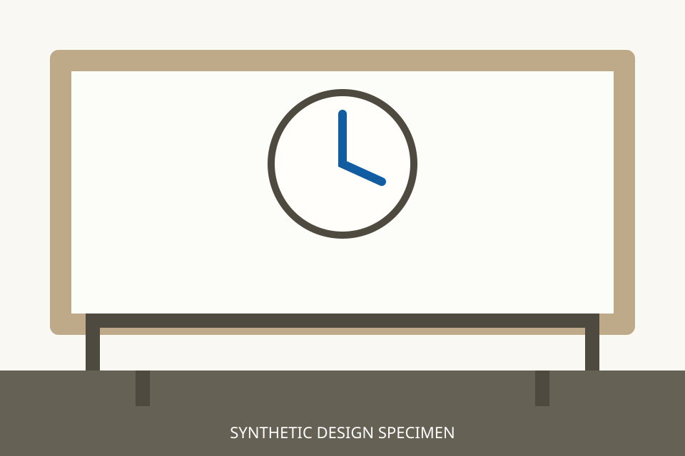

14 · Screens and flows
Image uploads
ProvisionalProvisionally approved under Lou’s delegation; pending Lou’s Phase 3 ratification.
One image at a time, JPEG or PNG up to 10 MiB and 4096 × 4096 pixels; video uploads are temporarily unavailable. Feedback is textual, with no percentages, toast or pre-verification thumbnail. A saved image is a Draft version, not an approved reference. Stopping only stops waiting; retries repeat the same upload and never claim saved work was undone. The station-clock image is a synthetic specimen. Restriction · Feedback rules.
Current upload states
Image-only attachment entry
The entry state has the existing Composer, image-only guidance and no upload receipt.
JPEG or PNG only · Up to 10 MiB · 4096 × 4096 pixels. Video uploads are temporarily unavailable.
Video attachment refused
Video uploads are temporarily unavailable
Choose a JPEG or PNG image up to 10 MiB and 4096 × 4096 pixels. Earlier transfers or saved work are not undone.
Preparing upload
A quiet moment at the station.
Attach a reference image. Selecting or saving it does not approve it.
Preparing station-clock.png…
Checking permission for this conversation. The selected file is not saved yet.
Upload in progress
A quiet moment at the station.
Attach a reference image. Selecting or saving it does not approve it.
Uploading station-clock.png…
The file is transferring. It is not a saved version yet.
Verifying and saving
A quiet moment at the station.
Attach a reference image. Selecting or saving it does not approve it.
Verifying upload…
Checking the file before saving it. Receiving bytes is not a successful save.
Verified image saved
Image saved · Version 1

DraftSaved in this conversation. This does not approve the image as a reference.
Upload link expired
A quiet moment at the station.
Attach a reference image. Selecting or saving it does not approve it.
Upload link expired
No saved version has been confirmed. Your selected file is kept. Upload again to request a new link.
Transfer interrupted
A quiet moment at the station.
Attach a reference image. Selecting or saving it does not approve it.
Upload interrupted
Some bytes may have reached storage. No saved version has been confirmed. Try the same upload again while its link is valid.
Confirmation response lost
A quiet moment at the station.
Attach a reference image. Selecting or saving it does not approve it.
Save could not be confirmed
The upload may already be saved. Retry checks the same upload; closing does not undo a completed save.
Stopped waiting
A quiet moment at the station.
Attach a reference image. Selecting or saving it does not approve it.
Stopped waiting for this upload
Stored bytes or a completed save may still exist. Check this same upload before starting another.
Unsupported image rejected
A quiet moment at the station.
Attach a reference image. Selecting or saving it does not approve it.
This image is not supported
Use JPEG or PNG up to 10 MiB and 4096 × 4096 pixels. No version was saved.
Size or dimensions rejected
A quiet moment at the station.
Attach a reference image. Selecting or saving it does not approve it.
This image is too large
Use JPEG or PNG up to 10 MiB and 4096 × 4096 pixels. No version was saved.
Damaged or mismatched file rejected
A quiet moment at the station.
Attach a reference image. Selecting or saving it does not approve it.
This file could not be verified
The file is damaged, incomplete or does not match its declared type. No version was saved.
Saved image loading
Loading image · Version 1
The saved version is unchanged. The image is not ready to display yet.
Saved image access failed
Image could not be loaded
The saved version is unchanged. Try loading this exact version again.
Saved image access expired
Image could not be loaded
The saved version is unchanged. Try loading this exact version again.
Same presentation as access failed; only the underlying expiry condition differs.
Account or conversation changed
A quiet moment at the station.
Attach a reference image. Selecting or saving it does not approve it.
Upload closed after scope change
The previous file and feedback are cleared here. Already issued transfers or saved work are not undone.
Image-only guidance
JPEG or PNG only · Up to 10 MiB · 4096 × 4096 pixels. Video uploads are temporarily unavailable.
Saved image in the viewer
Historical video presentation
Not current upload states. User video uploads are disabled; these remain only as the earlier saved-video presentation.
Video and poster saved
Video saved · Version 1
DraftSaved in this conversation. No Shot video has been chosen.
Poster access expired
Poster link expired
The saved video is unchanged. Refresh access to this exact version; no upload is repeated.